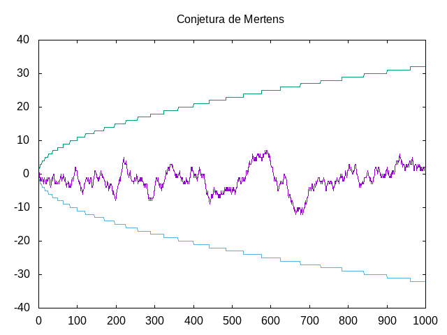

La conjetura de Mertens
Un número entero n es libre de cuadrados si no existe un número primo p tal que p² divide a n; es decir, los factores primos de n son todos distintos.
La función de Möbius μ(n) está definida para todos los enteros positivos como sigue:
- μ(n) = 1 si n es libre de cuadrados y tiene un número par de factores primos.
- μ(n) = -1 si n es libre de cuadrados y tiene un número impar de factores primos.
- μ(n) = 0 si n no es libre de cuadrados.
Sus primeros valores son 1, -1, -1, 0, -1, 1, -1, 0, 0, 1, ...
La función de Mertens M(n) está definida para todos los enteros positivos como la suma de μ(k) para 1 ≤ k ≤ n. Sus primeros valores son 1, 0, -1, -1, -2, -1, -2, -2, ...
La conjetura de Mertens afirma que
Para todo entero x mayor que 1, el valor absoluto de la función de Mertens en x es menor que la raíz cuadrada de x.
La conjetura fue planteada por Franz Mertens en 1897. Riele Odlyzko, demostraronen 1985 que la conjetura de Mertens deja de ser cierta más o menos a partir de \(10^{10^{64}}\), cifra que luego de algunos refinamientos se redujo a \(10^{10^{40}}\).
Definir las funciones
mobius :: Integer -> Integer mertens :: Integer -> Integer graficaMertens :: Integer -> IO ()
tales que
- (mobius n) es el valor de la función de Möbius en n. Por ejemplo,
mobius 6 == 1 mobius 30 == -1 mobius 12 == 0
- (mertens n) es el valor de la función de Mertens en n. Por ejemplo,
mertens 1 == 1 mertens 2 == 0 mertens 3 == -1 mertens 5 == -2 mertens 661 == -11 mertens 1403 == 11
- (graficaMertens n) dibuja la gráfica de la función de Mertens, la raíz cuadrada y el opuestos de la raíz cuadrada para los n primeros n enteros positivos. Por ejemplo, (graficaMertens 1000) dibuja 
Comprobar con QuickCheck la conjetura de Mertens.
Nota: El ejercicio está basado en La conjetura de Merterns y su relación con un número tan raro como extremada y colosalmente grande publicado por @Alvy la semana pasada en Microsiervos.
Soluciones
import Data.Numbers.Primes (primeFactors) import Test.QuickCheck import Graphics.Gnuplot.Simple mobius :: Integer -> Integer mobius n | tieneRepetidos xs = 0 | otherwise = (-1)^(length xs) where xs = primeFactors n tieneRepetidos :: [Integer] -> Bool tieneRepetidos xs = or [x == y | (x,y) <- zip xs (tail xs)] mertens :: Integer -> Integer mertens n = sum (map mobius [1..n]) -- Definición de graficaMertens -- ============================ graficaMertens :: Integer -> IO () graficaMertens n = do plotLists [ Key Nothing , Title "Conjetura de Mertens" , PNG "La_conjetura_de_Mertens.png" ] [ [mertens k | k <- [1..n]] , raices , map negate raices ] where raices = [ceiling (sqrt k) | k <- [1..fromIntegral n]] -- Conjetura de Mertens -- ==================== -- La conjetura es conjeturaDeMertens :: Integer -> Property conjeturaDeMertens n = n > 1 ==> abs (mertens n) < ceiling (sqrt n') where n' = fromIntegral n -- La comprobación es -- λ> quickCheck conjeturaDeMertens -- +++ OK, passed 100 tests.